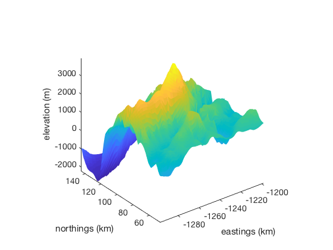
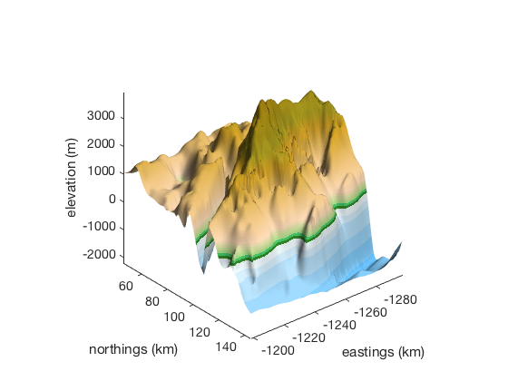
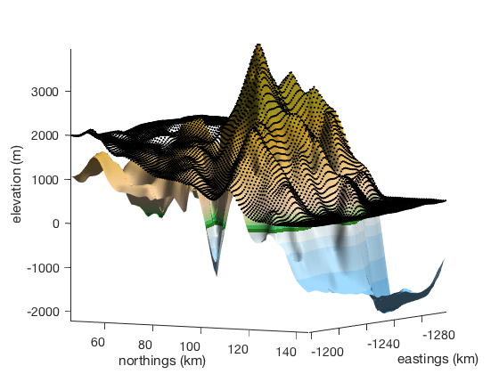

surfps documentation
surfps is part of Antarctic Mapping Tools for Matlab (Greene et al., 2017). Click here for a complete list of functions in AMT.
Don't have Matlab's Mapping Toolbox? No problem. surfps works just like Matlab's surf or surfm functions, but plots georeferenced data in Antarctic polar stereographic coordinates (true latitude 71°S).
Contents
Syntax
surfps(lat,lon,Z) surfps(...,'PropertyName',PropertyValue,...) surfps(...,'km') surfps(...,'meridian',meridian) h = surfps(...)
Description
surfps(lat,lon,Z) constructs a surface to represent the data grid Z corresponding to a georeferenced lat,lon grid in South polar stereographic eastings and northings.
surfps(...,'PropertyName',PropertyValue,...) specifies any number of surface properties.
surfps(...,'km') plots in polar stereographic kilometers instead of the default meters.
surfps(...,'meridian',meridian) specifies a meridian longitude in the polar stereographic coordinate conversion. Default meridian is 0.
h = surfps(...) returns a column vector of handles to surface objects.
Example
Load and plot a Bedmap2 DEM of a 100x100 km region around Mt. Vinson:
[centerlat,centerlon] = scarloc('mount vinson'); [lat,lon,bed] = bedmap2_data('bed',centerlat,centerlon,50); surfps(lat,lon,bed,'km') xlabel 'eastings (km)' ylabel 'northings (km)' zlabel 'elevation (m)'
We can make it look a little more like a real 3D surface by applying lighting. Also, I'm using Kelly Kearney's wonderful cptcmap function to color-scale elevations with the GMT globe colormap.
view([140 30]) lighting phong camlight material dull cptcmap('GMT_globe', 'mapping', 'direct'); shading interp
Now just for fun let's plot corresponding surface elevations as black dots using plot3ps.
sfz = bedmap2_interp(lat,lon,'surface'); plot3ps(lat,lon,sfz,'k.','km') view([120 5])
Citing AMT
If this function or any other part of Antarctic Mapping Tools is useful for you, please cite the paper that describes AMT.
Greene, C. A., Gwyther, D. E., & Blankenship, D. D. Antarctic Mapping Tools for Matlab. Computers & Geosciences. 104 (2017) pp.151-157. doi:10.1016/j.cageo.2016.08.003.
Author Info
This function and supporting documentation were written by Chad Greene of the University of Texas Institute for Geophysics (UTIG), November 2015, for inclusion in the Antarctic Mapping Tools package.